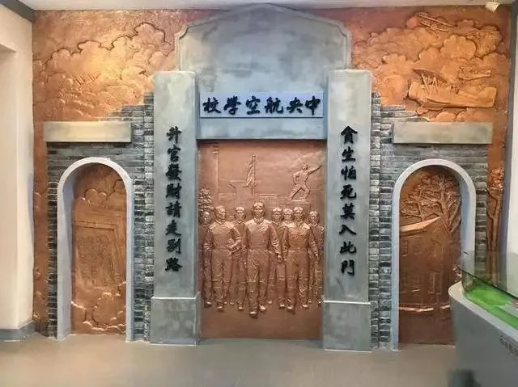

点击图片外区域、按 Esc 或点击右上角关闭 · 手机可双指缩放
点击文中图片可放大查看 · Tap any photo to enlarge

今天推出我爷爷长文《忆幹弟》的第二部分。一九二八年，国民空军中央飞行训练大队在南京组建。一九三一年，中国空军摇篮，笕桥中央航空学校建成，由蒋介石亲任首届校长。一九三三年，李有幹考入第五期飞行班，实现了他的空军梦想。
在我爷爷的这段记述中，有中央航校毕业典礼的详细描写。这真是一份极为罕见的史料。也是在这段记述中，提到了我爷爷的几个旧友：刘开渠、雷奎元、常书鸿和庞薰琹。
李有行 · 民国二十六年十二月二十二日 · 湖南常德武陵花园
民国二十年我同涤玄（编者祖母）返国回家，不久又南去上海就职仍少与幹弟往来，仅知他自南洋归来肯继续求学令人安心罢了。
二十二年春他陪同母亲到上海看擎儿（编者父亲）。我们勉强着想回复从前的亲热，竟似极不自然了。他先母亲回平，母亲不放心他一人在家，怕又生变就也匆匆赶了回去。当年夏他考航空学校去杭州复试，经上海小住我处。当他从杭州返回上海时那付沮丧面色令我代他难过，竟因眼睛可疑而落选了！他当时就表示决不放弃，下次再去应试，那种自信的态度又使我油然起敬！我劝他不妨去南京投考高射炮班。因为志不在彼，又不愿违我好意，只好枉费了一次往返。
在他等候年假招考期间，一心注意养息眼睛就很少留心功课了。我不免每每去责怪他，但事后又自悔多言，幹弟若不是那样嬉戏终日，他的身体定会因忧虑而衰退呢。当他为别人操劳时，又是勇敢负责到底，忘记养息眼睛了！
果然这一次天从人愿，他考入了航校，我们的喜乐及不得他那兴奋的万分之一呢！他得意极了，说笑整日不闭嘴赖以打破寂寞。他一去之后，我即刻爱他更甚于昔了，他仍然不失天真，我自豪有这样可爱的弟弟。
六个月军训入伍期限很快过去，幹弟及他的一个同伴蓦地出现在上海嵩山路戴家客厅，我简直惊喜万分，入伍期满的他像是铸就的英雄模型，神采奕奕，光耀眩人，好气慨呵！我那时客居友人家中无法尽情招呼他，无法尽情表现对他的挚爱，使我感愧欲涙。而他仍然笑容可掬，天真对人，送他走后我心中不免悒悒多日，难以入睡。
那是二十四年初春吧，幹弟练习长途飞行途经上海，电话招我去虹桥机场会晤。我当时唯恐错失机会，草草吃饭骑车直奔虹桥，觉得顶头逆风有意苦我，路又似较想象中远出数倍，但不敢稍懈的努力奔去。终于到达机场门首，忙询问守兵飞机尚在场否？答以尚在，于是才心安称快。通报后只见一飞行员出迎，稍近才认出即我幹弟，嘴中饮食尚在咀嚼中呢！我在接待室候他吃过饭便引我看视他们一行的飞机，一共十架排列极整齐，就是各省市祝蒋寿所献的飞机。不久命令到了，他首先起飞，这原是见过的事，此处都感觉完全两样，只因驾机者乃我爱弟也，他起飞绕场到我头上时招手再三而去。我在归途中一味回忆着那身穿飞行厚衣毛皮领大软皮鞋的笑迎我者，和当年在香山西慈幼院见我来迎者完全合为一人！令我含笑归来，笑我有这样一个亲爱的弟弟。
二十四年冬大概是十月里，他们第五期学生毕业了，幹弟最初希望母亲，大哥大嫂能去杭州参加恳亲会，母亲因在去冬半身不遂不能受此长途旅程，大哥大嫂也因此兴致减退。他们将请帖转寄给我代表出席，幹弟只好将希望降低至我同涤玄携擎儿前往。惜临行擎儿又发寒热，拖住涤玄亦不能去。我在杭州车站出口处正遇幹弟来迎，他真有点失望呢！除了一个二哥认识他的光荣，其余亲人都未曾眼见呀！他陪我送东西到刘开渠先生处，然后招待我入住旅舍登记、领证章、礼物、纪念照像、领旅费等等，他仍然抱希望涤玄能抱擎儿突然来临呢！
次日早晨我随其他毕业生家属乘航校备车直赴校舍步至观礼台站定，就见所有毕业生前来亲其所亲！幹弟到我面前将涤玄不能来的电报递给我看，他比那一两位没有亲属来校的同学稍为宽心一些！唉！使我联想起当年赴香山恳亲会的景况是多大差别呀！幹弟成人，幹弟有最光荣的职务，但是父亲看不见了，母亲不能前来参与盛典，他今天似有感触，有孤独的感触。
他们归队去了，分别按各自的岗位前往机场待命。不久礼乐响起，蒋校长莅场。全体教职员去场口迎接，行军礼顺次步入场内，行升旗礼，校长检阅飞机及毕业生，从头至尾相互敬礼后始登检阅台。命令一下各机依次起飞，入空即消失不见。稍倾轰鸣声自远而来，机群至上空排成各种阵式，去后复返换为五字阵列，继之个别表演、战斗表演等，其后机群鱼贯着陆，礼毕各生复归引亲属各处参观。途中幹弟称五字阵中彼居中划直角之端，执旗指挥行列，惜飞行过高无从辨认了。午食后他引我去看他们的宿舍，其建筑相当简陋但极清洁整齐。后去食堂，工场，球场，游泳池等处，遇有岗位处皆有还礼必要，这些都是我前所未见的。他送我回旅舍共晚食后再去校参观夜间飞行。好美的景色！信号枪尤美，照明弹亦壮观，确是雄伟微妙的场景！
翌晨九时齐集礼堂观毕业典礼，亲属在楼上学生在楼下，前排为毕业生后排皆为在校学生，蒋校长步入时空气徒变，音乐悠扬有致直至主席等登台始止。开会行礼如仪后，蒋校长致训辞，气慨极严肃清楚，意在勉励为国效力尽军人天职。随后发给毕业证书，毕业生有致答谢辞极动听。礼毕齐赴阅兵台前摄影，午食后观球戏。少倾恳亲会开始，蒋校长谢各家长来临，各家长代表答谢演说，继乃聚餐，座次皆毕业生陪坐各生家长旁，幹弟和我亦然。蒋校长亲临各座劝饮，至幹弟前询我为彼何人，答曰：哥哥。乃向我举杯并点头说："哦！好，请多喝点酒，没有好菜！"亲切如家人。席散继之游艺会，幹弟扮演一悭吝人之子，相当吃力。演毕下台坐我旁，共观另一剧，陪我返旅舍共宿，准备明日同返上海，他将去北平省亲。
我真想同他一路回家去看看母亲，他毕业定使母亲快慰之至，我也愿见慈母喜悦神色。见我幹弟得意而使家中人个个欢欣，可惜我缺少路费终未成行，他独自回去了！
幹弟在学校除却飞行与射击两课成绩列甲等，其他课程多是勉强及格或竟有一二门不及格的。他毕业后被派往洛阳去作飞行教官，而他私自愿望是被编入空军队中，现既派定亦就受命前去任职了。在洛阳几个月功夫，两广事变有用兵趋势，杭校教官多数入队中开往湖南江西，幹弟奉命返校任教官。他每逢休假日总往我友雷圭元家去玩，他们得他解闷亦极表欢迎。他每称在雷家有如到我家一般，但雷先生夫妇又总称他客气过分，我的朋友们亦都认为他是可爱的兄弟呢！
二十五年初夏，幹弟在一次飞行训练中堕机受伤住院，令我吃惊和担心万分。待我赶到杭州医院见他伤势尚无大碍，心乃稍安。回城到雷家，而圭元兄却已到医院探视他去了。后见到开渠，风眠诸先生，均言比次可谓万幸！一以贺他，一以慰我！返滬时一路庆幸幹弟确实脱离危险，不似来时的心焦欲焚了。
夏末我决计回平就教母校，临离时幹弟又来滬就牙医并为我家送行，啊！幹弟此后你再过上海就缺少一个至亲的人，少一种慰藉了！他望着徐徐离去的列车，若不是自强，开渠在旁，他定会透出恋恋之意的！当时孙妈（编者父亲幼时的奶妈，因割捨不下笔者）哭成了涙人一个，掩遮了幹弟的惜别！啊幹弟，请宽恕我，但他究竟是豪爽宽容的，反而称贺我能回平侍亲呢！好可爱的幹弟。
中秋节前他回平省视母亲，先直去顺城街家方知母亲住西山疗养，才转来西京畿道我的住处。我友薰琴夫妇及书鸿称道他的磊落气慨。我俩同乘人力车去西山，母亲细审幹弟面容，微察幹弟举止行动，知他虽历命险仍保持原有好体魄好气度，欣慰莫似，笑问他对婚事有无打算？告他多人关怀其事，询他作何感想？他亦答以狂笑而无诺言，我察他或自有主张，或有隐情，时机未到不愿告人罢了，劝母亲听他自定可也。至于我的揣测究是误会抑是果有其事，至今无以证之，啊！幹弟神秘起来了！
他自病愈后特别喜欢调制饮食，在西山益寿园住了两夜，每随涤玄赴市购鸡肉之类返舍入厨调制，母子兄弟称快一时，擎儿容儿（编者姑姑）亦得三叔如旧友亲妮无比。小住北平五六日忽接杭校电促返校，他依命南行。临别笑称若汕头事件需诉诸武力，彼决前去作战云云，啊！好勇猛的幹弟，我闻语不胜欣幸！幹弟真好男儿也！
不久之后接他来信称彼已编入空军第四大队，为二十二队队员，宿愿又以得偿！十二月西安事变突起，他来伩告之曾飞往示威并在潼关以西小试作战，来信不过一二封，字字行行都是忠勇之辞。
二十六年端午节前，幹弟来电称自浦口北返。隔日夜间十一时我去前门车站接他，他除随身衣服外还带来洞庭山枇杷一篓，笑嬉如昔，见我到站相迎则倍形喜乐。母亲知他归来更是虽睡而不能眠，待我俩到家她老人家又准备起床了，只因我等劝止才又睡下，但仍笑谈过午夜才各自安歇。从此每天他都陪伴母亲片刻再出去访问旧友，下小馆打弹子，划船饮茶谈笑看电影等等。偶尔一天他独自无聊我亦空闲，就提议为他绘像，他不置可否的坐下让我潦潦草草的画出一副豪迈气慨速写。而他竟闷坐得思睡了，我深深惋惜他不识休养之重要，并责他应节省体力精神勿过分嬉戏，他谓在校每日必午睡时许，夜夜复安眠，来平所谓嬉戏消遣何至有所损伤体力？
陪他去万安公墓（编者曾祖安葬于此）走到田野间，他精神抖擞的掏出手枪瞄准莽间发射两弹，两三只鹌鹑飞起惊逃了。他笑谓可惜差了一毫距离，否则便是现成下酒菜，我怪他轻于放枪唯恐招祸。他笑称不会，子弹不贵平常每每打着玩，在父墓献过花圈少留，见有雨意就匆匆搭车反城午食。隔日他便登归程了，我则因校事无法至车站送别，母亲涙流不能止，我劝她何必伤感悲别，过些日子他仍会回来探视母亲的。话虽如此，我当时亦有痛别的伤感。大半因国难日亟，他那勇猛效忠，临去不掉头的决绝神情，至今想起真像诀别之意。而就在他离去一个月，卢沟桥事起，我们也断绝了消息，母亲忧虑不已，直到病危的最后吐言仍念念幹弟不止。
（未完待续——详见下篇《永恒时光，长空碧血》）
点击图片外区域、按 Esc 或点击右上角关闭 · 手机可双指缩放